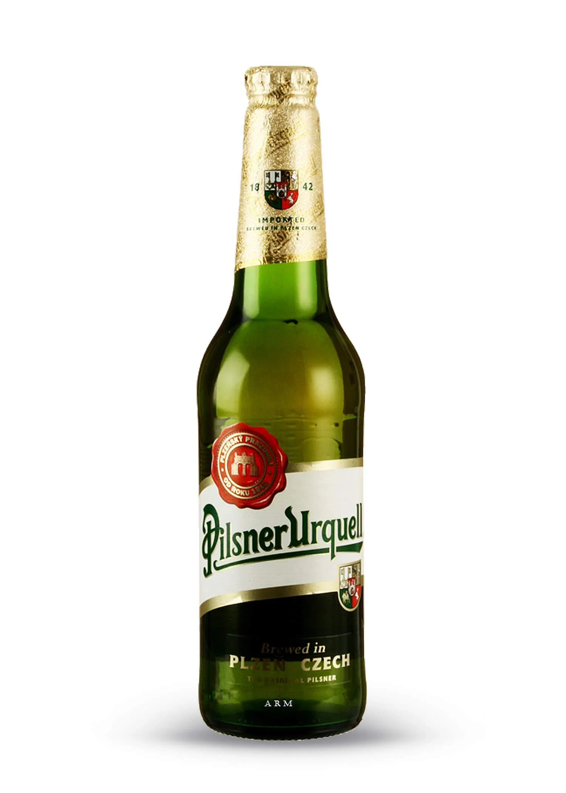

Urquell Pilsner.

Urquell Pilsner
La pionera Pilsen Urquell vio la luz en 1842. Los cerveceros del pueblo checo de Pilsen decidieron abrir su propia cervecera ante la falta de calidad de las birras de los alrededores. Y dejaron bien atrás las cervezas turbias y tostadas cuando el maestro cervecero Josef Groll creó la primera cerveza rubia lager: la 'Pilsener” cambiaría los cimientos del manual de elaboración de cerveza. Y todo gracias a su baja fermentación y su materia primera de primer calidad. Hay muchas pilsner, pero solo la Urquell es la rubia original.

Vista: Color dorado cristalino, de carbonatación baja y fina con espuma cremosa, poco persistente y de baja adherencia.

Olfato: Aromas a grano dulce, frutos secos y trazas de miel junto a lúpulo especiado y hierbas.

Gusto: Sabor especiado y a grano dulce con nota a pan y miel bajo un perfilado amargor que va principio a fin.